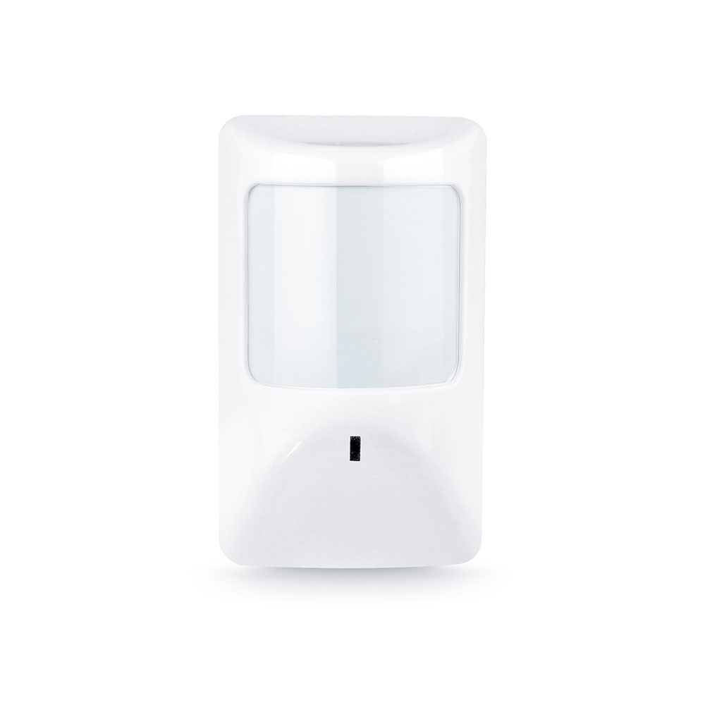

Датчик движения

Цена: 1001 ₽
Описание: Датчик движения с поддержкой Wi-Fi, позволяющая управлять контролем через мобильное приложение или голосовые ассистенты для удалённого контроля и настройки уведомлений
Состав:
- Датчик
- Wi-Fi модуль (2.4 ГГц)
- Кронштейн
Характеристики:
- Дальность сигнала: 30 м
- Индикатор тревоги: световой
- Место установки: помещение
- Совместимость: Alexa, Google Home